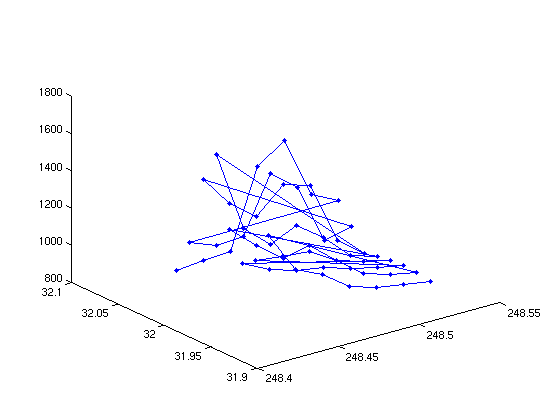
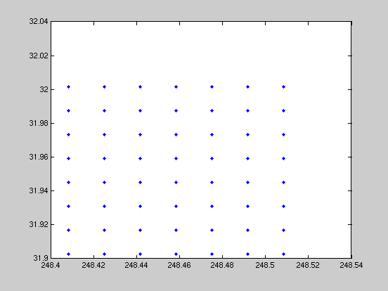
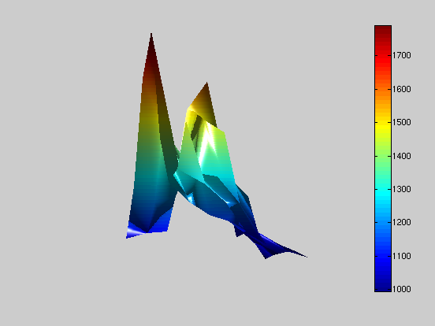

Topography of Kitt Peak (IN PROGRESS)
JTK 2010.5.3
Contents
Reading in the X,Y,Z data
First, we need to locate the data file containing the requisite X,Y,Z data (KittPeakTopoData.txt), and read it into MATLAB. In this case, since our data file is just three columns (of equal length), we can use the "load" function.
load KittPeakTopoData.txt %Loading the data file x = KittPeakTopoData(:,1); %Extracting the 1st column, for x data y = KittPeakTopoData(:,2); %Extracting the 2nd column, for y data z = KittPeakTopoData(:,3); %Extracting the 3rd column, for z data % If the extraction technique (i.e,. (:,2)) looks alien, review how MATLAB % handles matrices - since it's doing the exact same things here.
Scatter Plot
Now you can't just plug in a "surf(x,y,z)" command and immediately get a nice surface plot. The reason for this is in the formatting of our data. When doing surface plots or contour plots (see previous introductions), we're generating square arrays of data. Here we've just got a list of values. To illustrate this, we can do a simple 3D scatter plot:
figure(1) plot3(x,y,z,'.-') % Plotting a scatter plot of data (as demonstration)
Delaunay Triangulation
Since it's clear from above that we need to rework the data, the way we can do this is to use "Delaunay Triangulation" --- which will essentially build little triangles between all of the scatter plot points from the last step.
tri=delaunay(x,y); figure(2) plot(x,y,'.') % Plotting the data points (as demonstration) % And how many triangles can be constructed out of those data points? [r,c]=size(tri); % Finding out the number of triangles from Delaunay disp(r)
84
Plotting with TriSurf
With all of these little constructed triangles, we can then actually start to create true topographic maps!
figure(3) h=trisurf(tri,x,y,z); % Creating a 3d plot, out of meshed triangles. axis vis3d % This freezes the axis ratio of the plot - % preventing it from stretching to fill when % rotated.

Making our Topographic Map Nicer
figure(4) % Opening a new figure h=trisurf(tri,x,y,z); % Plotting the figure as before % Turning off the axis: axis off % Setting the lighting position: l = light('position',[-50 -15 29]) % Setting the camera position: set(gca,'CameraPosition',[208 -50 7687]) % Setting the lighting properties. Phong just indicates a particular type % of lighting. Other options are: flat, gouraud and none. lighting phong % Setting the shading properties. Interp will smooth out the colors - but % there are other options such as: flat and faceted. shading interp % Generating a colorbar to act as a scale for what the different colors % shown mean. "EastOutside" indicates the position of this scale. Look at % the help function for "colorbar" to see other possible locations. colorbar EastOutside
l = 636.0007